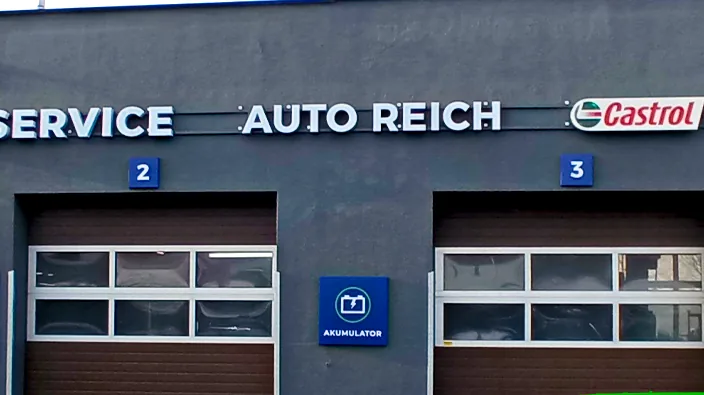
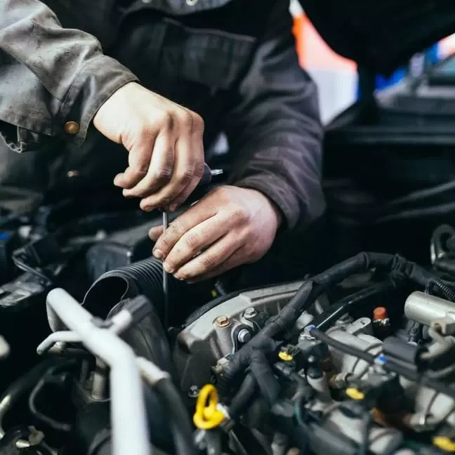
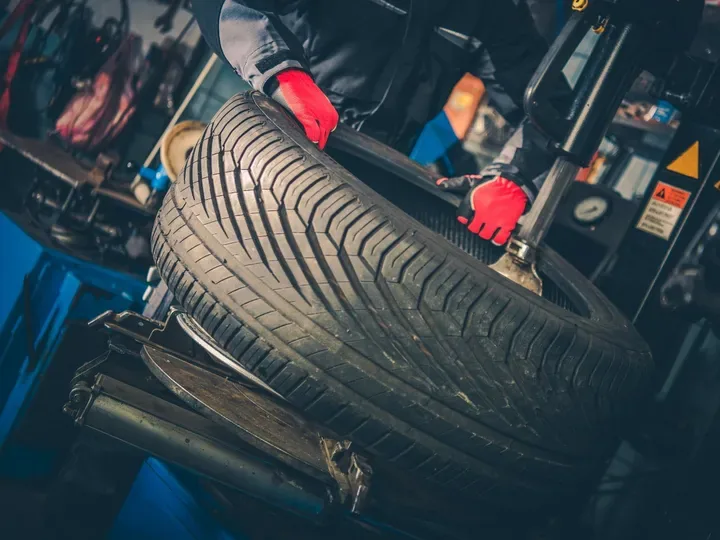
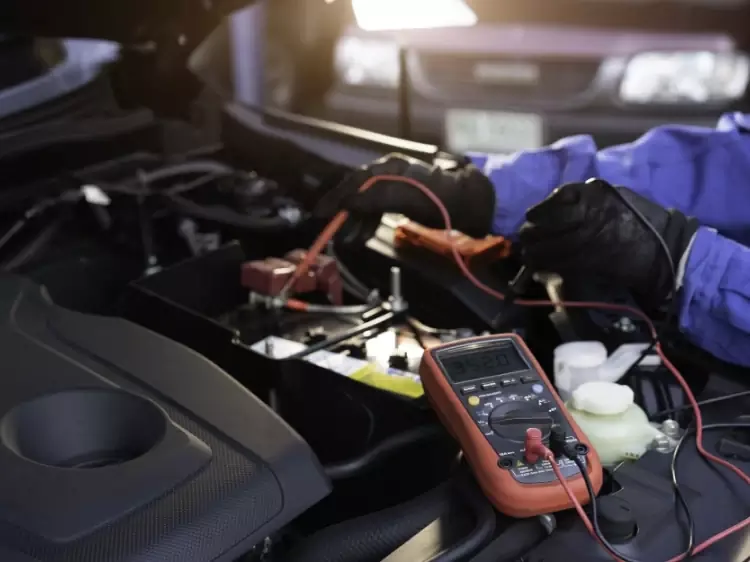
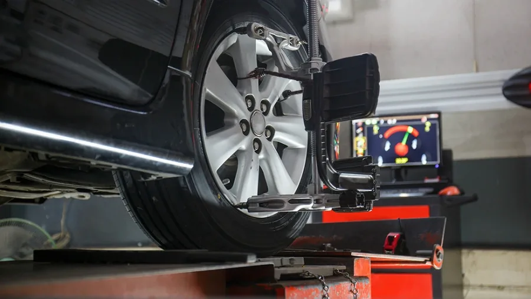
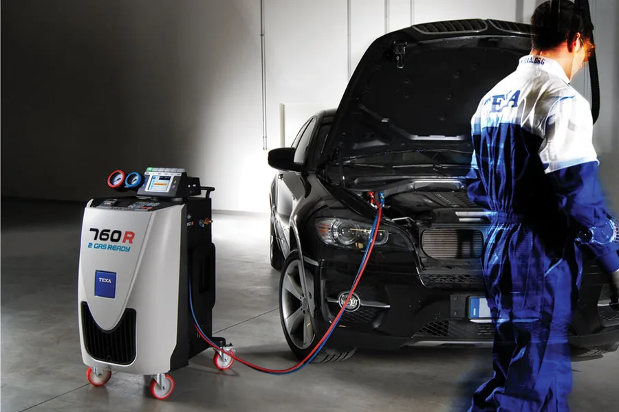
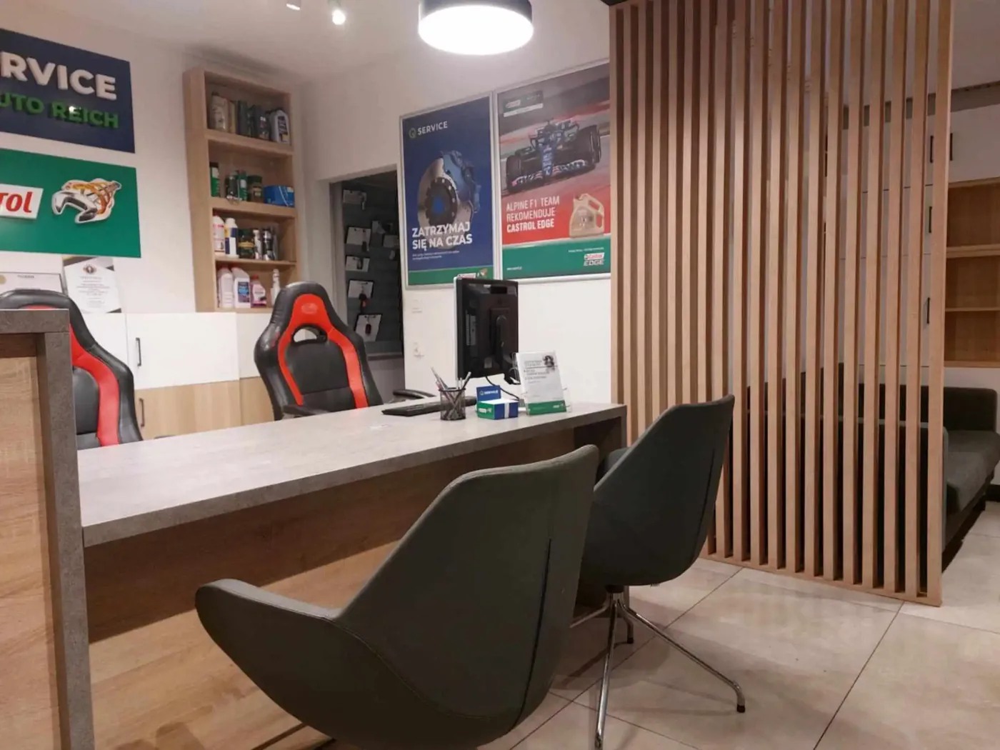

Mechanika, opony, blacharstwo i likwidacja szkód, elektronika, geometria i klimatyzacja. Wszystko w jednym serwisie przy ul. Barniewickiej, bez jeżdżenia od warsztatu do warsztatu.

Każda usługa ma swoją podstronę z opisem, cennikiem i odpowiedziami na pytania, które najczęściej słyszymy przy ladzie.

Zawieszenie, hamulce, rozrząd, sprzęgło i wymiana oleju, także dynamiczna w skrzyniach automatycznych.
Mechanika →
Wymiana, wulkanizacja, opony niskoprofilowe i runflat, sprzedaż i przechowalnia opon.
Opony →Naprawy powypadkowe i likwidacja szkód z OC i AC. Prowadzimy sprawę z ubezpieczycielem za Ciebie.
Likwidacja szkód →
Diagnostyka komputerowa, kodowanie sterowników, systemy ABS, ASR i ESP, kamery cofania i tempomaty.
Elektronika →
Prosto ustawiona kierownica i równo zużywające się opony. Pomiar i regulacja zbieżności kół.
Geometria →
Napełnianie, odgrzybianie i naprawa sprężarek. Sprawna klimatyzacja latem i suche szyby zimą.
Klimatyzacja →Kalendarz zapisów działa przez całą dobę. Wybierasz dzień i godzinę, przyjeżdżasz, a opony czekają już przygotowane.
Zakres i koszt naprawy znasz, zanim mechanik weźmie klucz do ręki.
Dzwonisz, piszesz albo zapisujesz się online. Ustalamy dogodny termin.
Sprawdzamy auto i mówimy wprost, co trzeba zrobić teraz, a co może poczekać.
Naprawiamy w ustalonym zakresie i oddajemy auto z informacją, co zostało wykonane.

Od 46 lat naprawiamy samochody mieszkańców Gdańska. Dziś to 10 stanowisk, 20 mechaników i biuro obsługi, w którym na spokojnie omówisz naprawę.
Pracujemy w sieci Q Service Castrol, na sprawdzonych częściach i olejach.